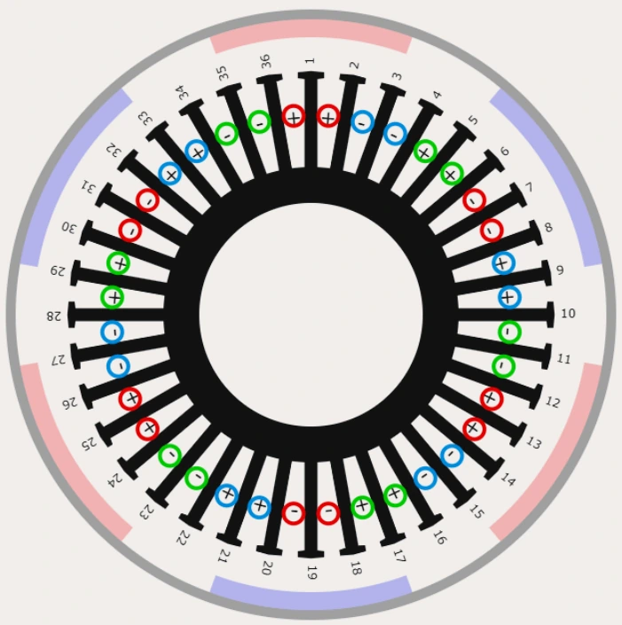

Project 01
PMSM OneWheel Hub Motor

In Brief
A permanent magnet hub motor I designed and built from scratch specifically for field oriented control. I did a custom distributed winding pattern around the stator according to my spec and validated a sinusoidal back-EMF profile using an oscilloscope.
Objective
I have always been intrigued by motors (electric motors in particular), the ability to turn electricity into motion seems magical, and yet the way motors are so ubiquitous today turn them into this seemingly simple thing which we take for granted. Motors are literally everywhere, everything from linear motion to water-pumps and turbines often start as rotation driven by motors, and without them the world would be a much more stationary place (you could almost say motors make the world turn…).
I wanted to know how motors work, so I built one entirely from scratch. Everything from the stator windings to the magnetic rotor, I specced, designed, built, and tested. Moreover, to make it more challenging and to squeeze a little bit more efficiency out of it, I designed the motor specifically for Field Oriented Control meaning the need for a magnetic encoder, distributed windings, and large arc magnets.
Being a personal project, much of this build was constrained by budgets, but through various attempts to compromise and de-scope, I was able to assemble a first prototype which is currently being tested. The ultimate goal of this project is to use the motor in a larger DIY OneWheel build which has been a dream of mine for a while.
Design
I began by defining my constraints then modeled everything in SolidWorks, since this first prototype would be largely 3D printed, everything was designed with a heavy focus on DFM for FDM printing.



Field Oriented Control
I wanted to use field oriented control (FOC) to drive this motor. This meant two things that needed to be different from a typical motor: encoder to detect position, and large arc magnets in the rotor.
Finding a place to put a magnetic encoder proved difficult because it meant needing to split the shaft to make the encoder concentric with the motor, however, supporting the stator from only one end would severely compromise its rigidity which is a concern as it experiences extreme magnetic forces.
I designed a way to place the encoder inside the shaft by splitting the shaft and decoupling it from the rotor using bearings.


Wide angle arc magnets are vital for creating a sinusoidal back-EMF profile. However, large arc magnets are hard to find in the proper dimensions, which makes custom ordering the only option, but this obviously greatly exceeds my budget for this project.
To compromise, I approximated arc magnets using smaller block magnets placed adjacently. Block magnets are much cheaper.
I validated that this works by using magnetic sensitive sheets to visualize the magnetic fields, and indeed the magnetic field appeared uniform in the regions they should be.


Back-EMF Validation
Using an oscilloscope I could verify that the back-EMF from spinning the motor was roughly sinusoidal. The 6 spikes seen can be attributed to the 6 individual magnets in each arc cogging with the stator.